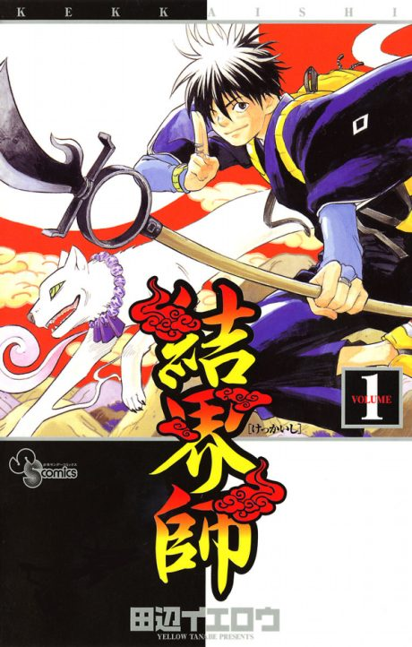

Kekkaishi
結界師
Yoshimori, a boy who uses magic barriers, protects his school at night from demons alongside his childhood friend and rival Tokine.
After the anime, read the manga from Chapter 121.
7.2AniList score
—Animeter, no votes yet
52episodes
Rate it or report where you stopped
Is it worth pushing through?
Built from what visitors report across all 52 episodes.
Loading reports…Checking what other people said about this one.
Sign in above with your email to add your report.
More like Kekkaishi
 Manga Ch. 407.8
Manga Ch. 407.8
 Manga Ch. 347.8
Manga Ch. 347.8
 Done7.3
Done7.3
 Unclear7.9
Unclear7.9
 Done8.1
Done8.1
 Unclear7.7
Unclear7.7
 Done8.0
Done8.0
 Manga Ch. 757.6
Manga Ch. 757.6
 Manga Ch. 927.7
Manga Ch. 927.7
 Manga Ch. 1818.4
Manga Ch. 1818.4
 Manga Ch. 2707.9
Manga Ch. 2707.9
 Done8.1
Done8.1